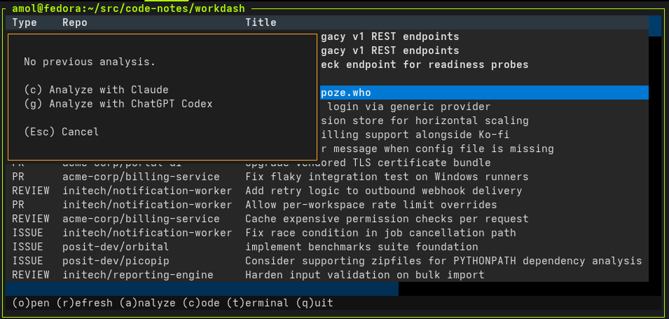

From inbox to code, in three keystrokes
workdash collapses the gap between
knowing what to work on and actually working on it.
Here is what that looks like for the common things you spend most of
your GitHub day on. Click any screenshot to zoom in.
Review a pull request
Skip the "what is this PR even doing?" step and dive into a grounded review.


Workflow
- Spot the review requests. PRs waiting on your review are surfaced in the same list as everything else, so they do not get lost in a GitHub notifications tab.
-
Pick an analysis —
a. The analyze dialog offers the cached result or a fresh run with Claude or Codex. - Read the briefing. The analysis is rendered as HTML summarising the change, the intent, and the risky parts. Cached until the PR is updated, so re-opening is free.
-
Open it in context —
oorc. Jump to GitHub to leave comments, or drop into a worktree with the PR checked out to actually run the code.
See what changed in a pull request
Review the actual diff before you decide whether a PR needs your next reply, another commit, or a deeper review.

Why it helps
- Check authored PRs without context switching. See your current branch changes from the same dashboard you use to track review feedback.
- Review incoming PRs with the diff nearby. Move from the queue to the code changes without hunting through GitHub tabs.
- Decide the next action faster. When the diff is visible, it is easier to choose between replying, requesting changes, or opening a worktree.